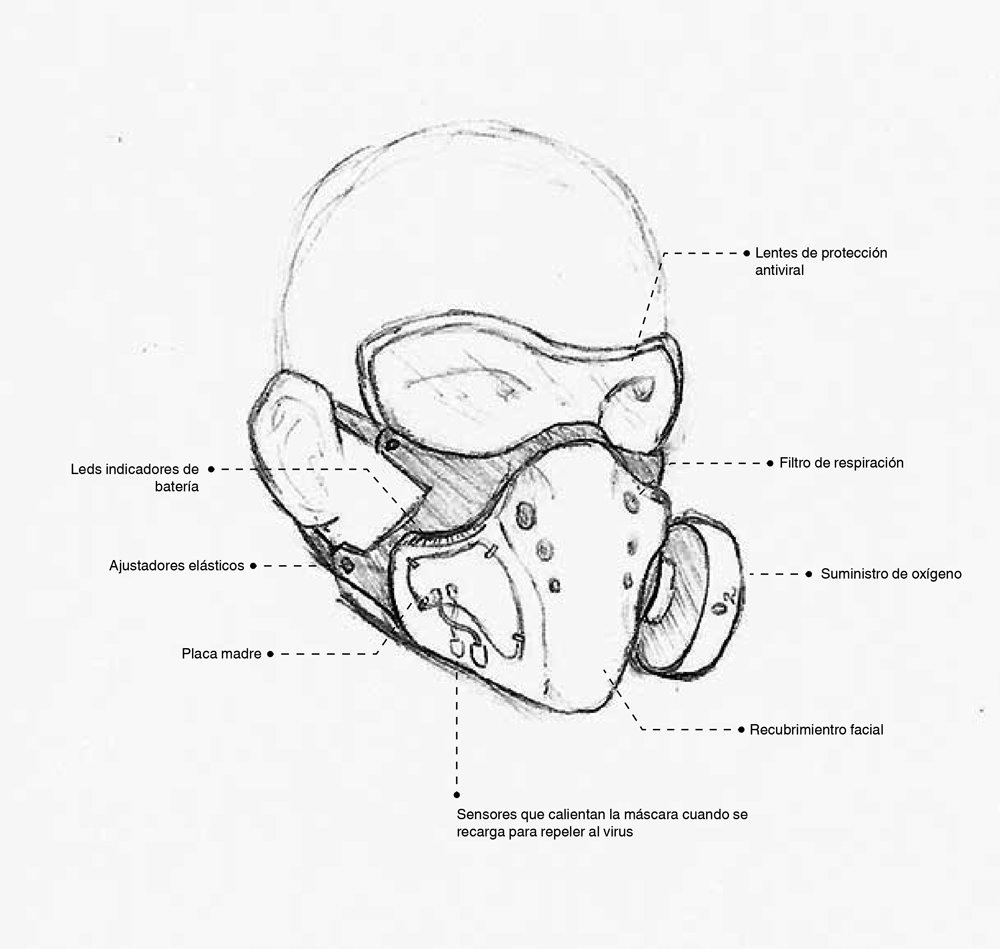
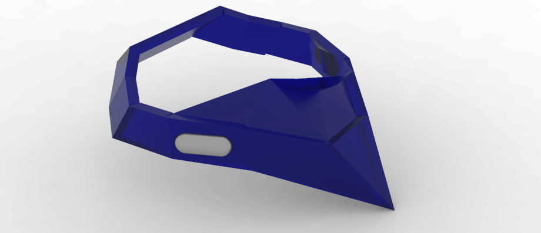
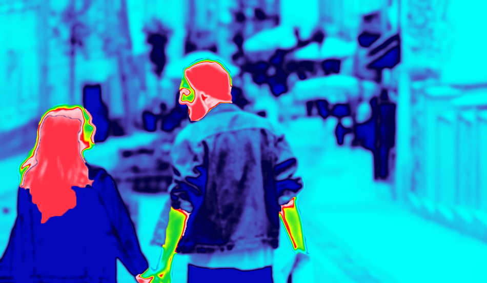
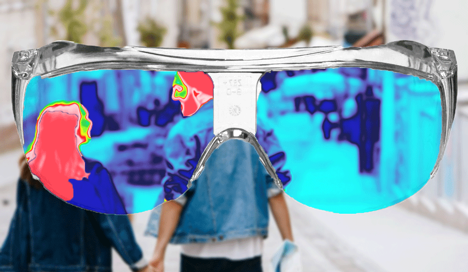
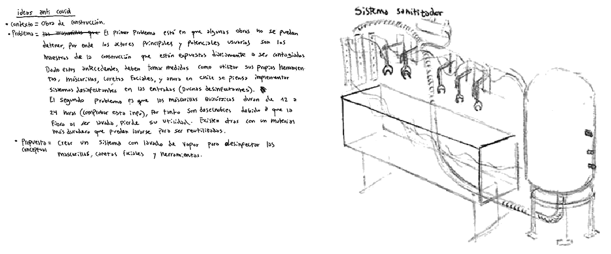

Diseño de Wearables que enfrentan al Covid-19 - Segunda parte de la investigación y desarrollo de propuestas.
Continúa la investigación junto a Ignacio Saavedra. En esta ocasión les presentamos una serie de propuestas para enfrentar la pandemia, tanto en el presente, como en un futuro.

Pensada para poder ir al exterior sin correr el riesgo de contagiarse con enfermedades virales. Es un wearable de uso temporal, es decir, su función consiste en permitir al usuario movilizarse y estar preparado para circular zonas de riesgo viral con el equipamiento adecuado. Necesitamos equipamientos lo más completos posibles para el bienestar de las personas del futuro.

La máscara contiene un suministro de oxígeno limitado y ligero (que es racargable) para moverse en zonas infectadas. Esto surge de la necesidad de las personas para no desviarse de sus caminos o porque requieren estar en una zona por temas laborales. El recubrimiento contiene una placa inteligente que avisa el procentaje de batería y duración del oxígeno al ser activado. Además posee un sensor que se calienta cuando la máscara no está en uso y se encuentra cargando. Dicha temperatura disminuye el riesgo de que la superfice esté infectada y repele el virus. Es un pequeño sistema sanitizador. Los lentes de protección son parte de la máscara.
Los potenciales usuarios podrían ser, en un corto plazo, médicos cuya labor esté basada en la asistencia residencial. Esto disminuiría drásticamente su riesgo sanitario. También personas que requieran movilizarse en zonas infectadas por emergencias o temas laborales, incluyendo profesiones que no han detenido sus jornadas.
En un mediano y largo plazo (por temas económicos y políticos), todas las personas podrían utilizar su propia máscara para vivir en contextos de pandemia. Utilizar una máscara temporalmente sería algo común y fundamental dentro de los equipamientos para la humanidad.
Desconocemos qué nos deparará el futuro, es por eso que consideramos importante anticiparnos a los problemas y a re-pensar cómo serán los equipamientos, los dispositivos y las formas de vestirnos y movilizarnos.
El concepto de máscara se desarrolla en un crecimiento reactivo del wearable, desde el cuello en la vestimenta. Es decir, a medida que el usuario avanza en una zona, la tecnología detecta mediante sensores de calor personas con probabilidad de estar infectados como ver la presencia del virus en diversas superficies, se adapta a la anatomía facial de la persona desplegándose en la medida que aumenta el riesgo de ser contagiada/o.

El wearable incluye una data sobre el virus, en territorios de la ciudad. Los lentes de la máscara permiten ver, además, las superficies en donde se encuentra el virus y las altas temperaturas en seres vivos, como medida preventiva en virtud de la sensibilidad de la máscara y de la percepción del usuario.

Los detalles del objeto como la notificación de batería y proximidad de virus, se implementa mediante un sistema que avisa en el smartphone.
Tal como una bomba de humo está pensada para funcionar en zonas especificar que afectar, en este caso con un químico que neutralice el COVID dejando la zona limpia del virus. Este puede ser arrojado en zonas de alto contagio, difícil acceso para así no correr riesgo con personal médico en dichas áreas.
 A corto/mediano plazo consiste en un sistema con lavado de vapor para desinfectar las mascarillas, caretas faciales y herramientas. Es un lavadero o recipiente de gran tamaño para colgar y disponer de objetos que pueden ser lavados diariamente al final de las jornadas de trabajo. Creemos que esta idea podría ser llevada a otros contextos y funcionar igual de bien o incluso mejor. Lo pensamos específicamente en un usuario por la urgencia que se presenta actualmente de poder trabajar sin correr altos riesgos. Tenemos en cuenta que el cuidado laboral depende de muchos otros factores, incluyendo el usuario mismo, y recalcamos este último punto porque, para implementar sistemas de este tipo, tambiéen se necesita fomentar la costumbre de utilizarlos y respetar sus protocolos.